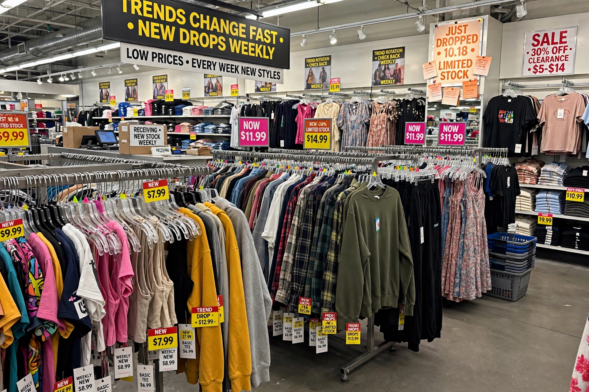

From Wikipedia, the free encyclopedia
| Fast fashion | |
|---|---|
 | |
| Key firms | Inditex (Zara), H&M, Shein, Boohoo |
| Emergence | 1990s–2000s; "ultra-fast fashion" from late 2010s |
Fast fashion is a business model and design approach in which clothing collections are produced quickly and cheaply in response to the latest trends, allowing mainstream consumers to buy fashionable garments at low prices. The model compresses design, production and distribution into a few weeks and replaces the traditional two-season calendar with constant new drops.
Spain's Zara is widely credited with pioneering the model from the 1980s–90s, with Sweden's H&M and others following. Online-only "ultra-fast fashion" firms such as China's Shein and Britain's Boohoo later shortened cycles to days, listing thousands of new items daily using real-time sales data and small test batches.
Fast fashion is criticised for textile waste (most garments are landfilled or incinerated), high water and carbon footprints, microplastic pollution from synthetics, and low wages and unsafe conditions in supplier factories — highlighted by the 2013 Rana Plaza collapse in Bangladesh, which killed over 1,100 garment workers. The industry accounts for a significant share of global emissions and waste.
Responses include EU textile-waste and due-diligence rules, France's anti-fast-fashion measures, resale and rental platforms, and "slow fashion" movements — while major groups such as Inditex publicise recycled-input and circularity targets.